2026-08-26 physical wake clip
Raw video is retained outside git and identified above by exact byte size, duration, and SHA-256. The acceptance frame is stored in-repo for Pages.
Artifacts and markers
Physical artifacts, stable hashes, and acceptance frames are kept with the public record so each hardware claim remains scoped and citable. Large raw videos are identified by hash rather than stored directly in git.
2026-08-26 physical wake acceptance
On the physical target laptop, PythOS reached the opt-in physical wake
diagnostic after firmware exit, received the built-in keyboard byte
stream, decoded wake plus Enter, and displayed
accepted on the framebuffer.
Observed raw Set-1 sequence 11 91 1E 9E 25 A5 12 92 1C
Raw clip duration 40.638811 s
Raw clip size 366801558 bytes
Raw clip SHA-256 8deabe1c4dc3f8b659c81d7ab4bde149b58f8e75c61b4c9de08062a645d02dd9
This evidence proves the post-firmware keyboard byte path and wake recognizer on this specific physical machine. It does not claim USB HID, trackpad support, generic PC keyboard support, interrupt-driven physical input, authentication, or general shell control from the keyboard.
ADR 0074 defines the diagnostic gate and its claim boundary.

2026-08-28 no-write storage probe
After the normal boot diagnostic reached stage 19 /
init block dev, the no-write hardware-probe image
identified the target storage path as O2 Micro 1217:8620
SDHCI/eMMC and completed a read-only LBA0 probe.
BAR0 00000000E8B01000
OCR C0FF8080
LBA0 checksum 000006F9
Nonzero bytes 0000000C
Photo SHA-256 690058616C26DC7A0034906B766465D540B6C3D22E0307CA09F79651C68441C6
This proves read-only SDHCI/eMMC controller/card access on this current target. It does not prove physical normal boot writes, object-store persistence, shell entry, or broad hardware support.
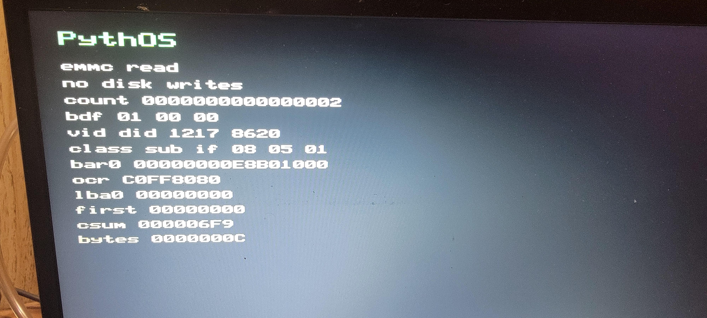
2026-08-29 normal boot diagnostic
The deployed normal diagnostic plus sdhci-emmc-backend
image reached stage 37 / ring3 enter on
the current physical target after the no-write probe identified
O2 Micro 1217:8620 SDHCI/eMMC.
Deployed core SHA-256 1432589585001622FF623D8F7751D227AE3011561457C1173C411A07840EDBF8
Photo SHA-256 73DE7440513C54A574F21C7C5ADD8E02AF7362CAA98BDC254518D5BC4CF09AF8
The visible Enter Shell tile is retained framebuffer
content from before ring-3 entry. This evidence does not prove
trackpad input, framebuffer terminal output, physical shell input,
or durable eMMC persistence.
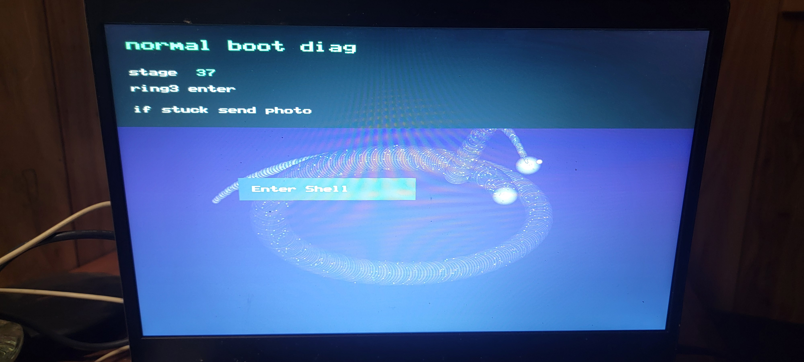
2026-08-31 no-write USB probe
The opt-in usb-xhci-probe image was QEMU-accepted,
deployed to the verified P: USB ESP target, and then
booted on the physical machine. It mapped the selected xHCI BAR
into PythCore page tables, read the xHCI register header, rendered
framebuffer identity, and emitted NO_DISK_WRITES.
QEMU acceptance USB_XHCI_PROBE_TEST_OK / QEMU_OUTCOME success
Physical BAR0 00000000E8C68000
Physical registers CAPLENGTH 20, HCIVERSION 0100, HCSPARAMS1 08000820, HCCPARAMS1 014040C3, USBSTS 00000009
External USB mouse Dell/PixArt 413c:301a behind Linux path usb 1-1
Built-in trackpad I2C HID ELAN0666:00 04F3:304B, not PS/2
Copy verification USB_XHCI_PROBE_VERIFY_OK files:8 bytes:3814456
Deployed core SHA-256 479588E4268C65E6F03EECAEF0534D7D5F4ADEEF9EBA0B1DD50D3549BF67D0AA
Photo SHA-256 EF950D8A3B9804635C99BDF04C49026A87912F79E2FDC13A393FAA21CF0481C8
This proves physical xHCI controller/register reachability on the current target. It does not claim USB enumeration, HID parsing, mouse movement, trackpad support, IRQ input, DMA rings, or broad USB support.
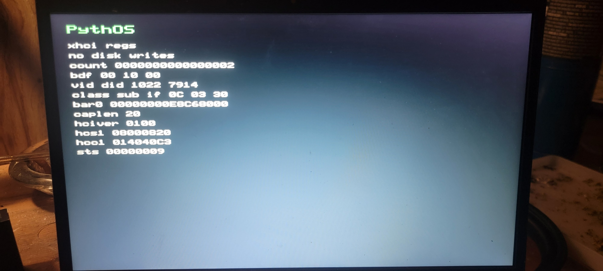
2026-08-31 QEMU USB probe and deployment
The opt-in usb-xhci-port-probe image extends the
no-write xHCI register probe with max-port decoding, xECP decoding,
USB legacy-ownership observation, and up to eight
PORTSC/PORTPMSC reads. It does not reset
xHCI, claim ownership, allocate rings, enumerate USB devices, parse
HID, or move a cursor.
QEMU acceptance USB_XHCI_PORT_PROBE_TEST_OK / QEMU_OUTCOME success
Observed QEMU port port 5 PORTSC 00000E03, PORTPMSC 00000000
Ownership result xECP byte offset 0020, USB legacy-support capability absent
Copy verification USB_XHCI_PORT_VERIFY_OK files:8 bytes:3840440
Deployed core SHA-256 447D1F9CA8D97F8000F0905566628AE3B959C212E4E2B33C558220E436D94320
Physical port-status evidence for AMD 1022:7914 is
pending. This entry records the QEMU-accepted diagnostic candidate
and verified USB deployment only.
2026-08-31 QEMU hotplug, USB deployment, and physical video
The opt-in usb-xhci-swap-probe image handles the
single-port hardware test case. It renders swap mouse now,
waits while the boot USB can be removed, ignores the expected
detach event, and polls read-only xHCI port-status registers for a
later disconnected-to-connected mouse event.
QEMU acceptance USB_XHCI_SWAP_PROBE_TEST_OK / QEMU_OUTCOME success
Prompt marker SWAP_READY after FRAMEBUFFER_SWAP_READY
Ignored QEMU detach port 1 PORTSC 00001203 to 000202A0
Observed QEMU connect port 5 PORTSC 000002A0 to 00020EE1
Copy verification USB_XHCI_SWAP_CONNECT_VERIFY_OK files:8 bytes:3857656
Deployed core SHA-256 A11B480D37A0C0299B4D6D96080C506C533BC0D1E3492CE1876C3F4F1A269BFE
Observed physical connect port 5 PORTSC 000002A0 to 000202E1
Physical still SHA-256 20B2CCA74EB8FD23080943FB368147F3D56A884A09F753479A9E4D5FF9A038E8
The first physical attempt proved the previous build stopped on boot-USB removal before mouse insertion. The corrected physical image kept polling and recorded the later port-5 connect. This remains a no-write port-status observation layer, not xHCI ownership transfer, USB enumeration, HID parsing, or cursor movement.
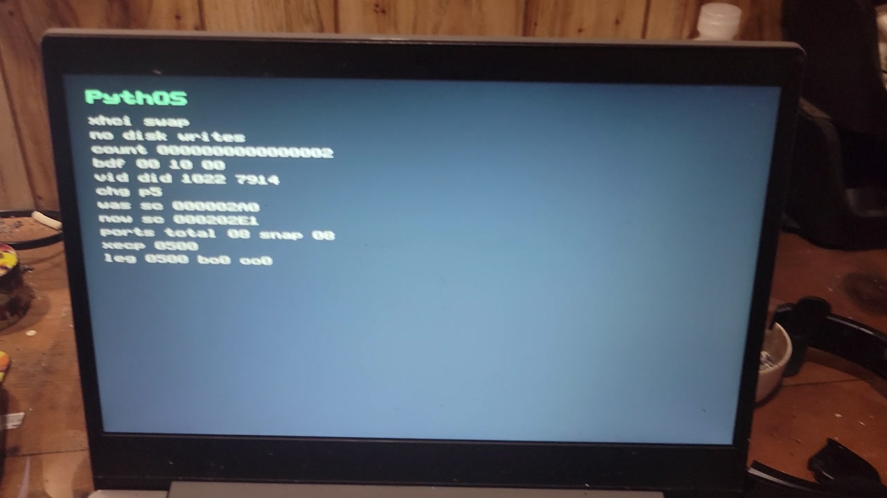
2026-09-01 QEMU, USB deployment, and physical command-ring success
The opt-in usb-xhci-command-probe image is the first
write/DMA xHCI driver diagnostic. It reuses the swap-port flow, then
resets and starts the controller, configures static page-aligned
scratchpad and command/event DMA structures, resets the selected
connected root port, completes a No-op Command, and completes
Enable Slot in QEMU and on the physical AMD 1022:7914
controller.
QEMU acceptance USB_XHCI_COMMAND_PROBE_TEST_OK / QEMU_OUTCOME success
Driver markers XHCI_SCRATCHPAD_COUNT=0, XHCI_COMMAND_RING_READY, XHCI_EVENT_RING_READY, XHCI_NOOP_COMMAND_COMPLETE, XHCI_ENABLE_SLOT_READY
Observed QEMU port port 5 PORTSC 00220E03 after reset
Physical scratchpad gate port 5 connect reached xhci cmd err / err 00000006, mapped to unsupported scratchpad buffers in the first image
Physical error frame SHA-256 A6D6271A065EA3B6547A28F69CCFDD37484F10B4266105A980255D2B1B24CB2E
Physical command-ring success BDF 00 10 00, vendor/device 1022 7914, port 06, slot 01, No-op CC 01, Enable Slot CC 01, USBSTS 00000000, PORTSC 00220603, scratchpad count 08
Physical success frame SHA-256 534B40C205D3BC4FE43F8BF0CBF6D0EFA0687E7F19E247BE08C94F818664AC52
USB deployment verified P: Lexar D70E PYTHOS_ESP; USB_XHCI_SCRATCHPAD_VERIFY_OK files:8 bytes:3949296
Deployed core SHA-256 5E65C5A697A443369CB9AAC11E4AADAB7A26888B920EC89F43BEC5F33CF8CC44
No-write marker PYTHOS:CORE:USB_XHCI_PROBE:NO_DISK_WRITES
This is physical command-ring acceptance. It does not prove USB addressing, descriptor reads, endpoint setup beyond the command ring, HID parsing, cursor movement, IRQ-driven input, or trackpad support.
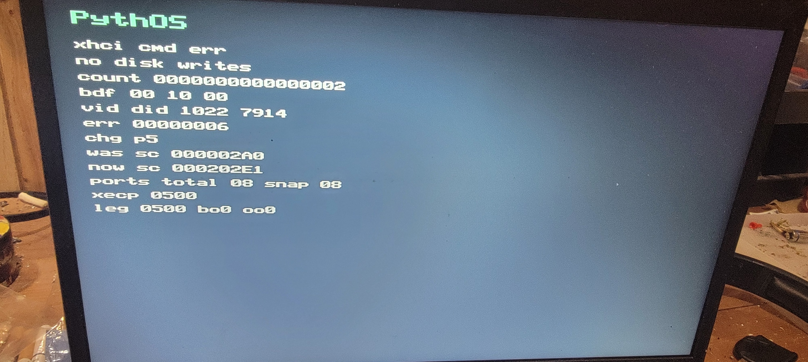
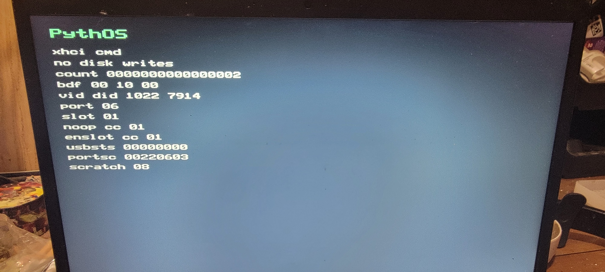
2026-09-01 QEMU, USB deployment, and physical Address Device success
The opt-in usb-xhci-address-probe image builds on the
command-ring success path. It prepares xHCI input/output contexts,
wires endpoint 0, issues one Address Device command, and reports
the assigned address and context states while preserving
NO_DISK_WRITES. The deployed image also reached the
same Address Device success boundary on the physical AMD
1022:7914 controller.
QEMU acceptance USB_XHCI_ADDRESS_PROBE_TEST_OK / QEMU_OUTCOME success
Observed QEMU address result Address Device CC 01, device address 01, slot state 02, EP0 state 01
Context setup context size 32, port speed 03, max packet size 0064
USB deployment verified P: Lexar D70E PYTHOS_ESP; USB_XHCI_ADDRESS_VERIFY_OK files:8 bytes:3977256
Deployed core SHA-256 E666859BFEE4FE6162690F3D8860E24992492441F859AEE6C8F4FC14DDBC3D53
Physical address result BDF 00 10 00, vendor/device 1022 7914, port 05, slot 01, No-op CC 01, Enable Slot CC 01, Address Device CC 01, device address 01, slot state 02, EP0 state 01, speed 02, context size 32, max packet size 0008, PORTSC 00220A03, scratchpad count 08
Physical success frame SHA-256 8A4D2D6D8F74AEE88D2B535F4447CBDC338E590944F0D8130E7B6FD6476A6D5A
No-write marker PYTHOS:CORE:USB_XHCI_PROBE:NO_DISK_WRITES
This is physical Address Device acceptance. It does not prove descriptor reads, HID parsing, endpoint polling, cursor movement, IRQ-driven input, or trackpad support.
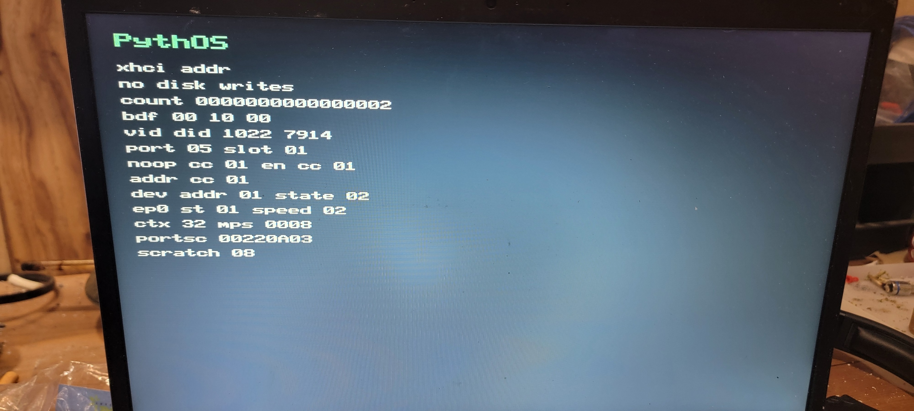
2026-09-01 QEMU, USB deployment, Linux target mapping, and physical photo
The opt-in usb-xhci-descriptor-probe image builds on
the physical Address Device layer. It queues one endpoint-0
GET_DESCRIPTOR(Device) control transfer, reads the
18-byte device descriptor, and reports the descriptor completion
code plus parsed descriptor fields while preserving
NO_DISK_WRITES.
QEMU acceptance USB_XHCI_DESCRIPTOR_PROBE_TEST_OK / QEMU_OUTCOME success
Observed QEMU descriptor transfer CC 01, length 12, type 01, USB BCD 0200, class/sub/protocol 00 00 00, MPS0 0040, VID/PID 0627 0001, config count 01
USB deployment verified P: Lexar D70E PYTHOS_ESP; USB_XHCI_DESCRIPTOR_VERIFY_OK files:8 bytes:3996680
Deployed core SHA-256 CFE2381F38DA91E11A31F021B315B4B12C030DB3F296C8B591BA6DF0A5289924
Linux target mouse map Dell/PixArt 413c:301a, path /sys/bus/usb/devices/2-1, low speed, MPS0 8, HID boot mouse 03/01/02, endpoint 0x81 interrupt IN, max packet 4, interval 10
Field-kit archive SHA-256 528058762026647AFA2D5FD94E6086128C6B4EDD88CE60880C573294AFA3006B
Physical descriptor result deployed descriptor screen shows xhci desc, no disk writes, BDF 00 10 00, vendor/device 1022 7914, port 05, slot 01, Address Device CC 01, descriptor CC 01, length 12, type 01, USB BCD 0200, device BCD 0100, class/sub/protocol 00 00 00, MPS0 008, config count 01, VID/PID 413C 301A, scratchpad count 08
Physical frame SHA-256 4204994560727C63A8F631A05CCECFA68C3FC20189E12A2834E621327FDA61B6
This is QEMU descriptor evidence, deployment evidence, Linux target descriptor mapping, and photo-backed physical descriptor acceptance. It does not prove configuration descriptor reads, HID parsing, cursor movement, IRQ-driven input, or trackpad support.
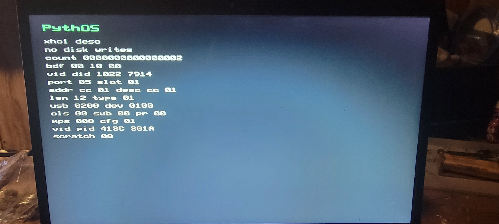
2026-09-02 to 2026-09-03 QEMU and physical acceptance
The opt-in usb-xhci-configuration-probe image extends
the Device Descriptor path with a bounded two-stage endpoint-0
read. It validates the nine-byte configuration header, caps
wTotalLength at 256 bytes, reads exactly the validated
total, and walks standard interface and endpoint descriptors.
QEMU acceptance USB_XHCI_CONFIGURATION_PROBE_TEST_OK / QEMU_OUTCOME success
Transfer result header CC 01, full CC 01, total length 0022, configuration value 01, interface count 01
Parsed QEMU mouse HID boot mouse 03/01/02, interrupt-IN endpoint 0x81, attributes 0x03, max packet 4, interval 7
Physical attempt Lenovo 81VS reached the swap prompt, detected the mouse connect on port 06, then rendered xhci cfg err / generic timeout 0x0F
Refreshed diagnostic additive screen codes 0x2C..0x31 distinguish No-op, Enable Slot, Address Device, Device Descriptor, configuration header, and full configuration waits; diag cfg stage1 identifies the deployed image
Physical acceptance port 05, slot 01; Address Device, Device Descriptor, header, and full configuration completion codes all 01; total 34, value 1, HID boot mouse 03/01/02, endpoint 0x81, attributes 0x03, max packet 4, interval 10
Storage boundary NO_DISK_WRITES; the harness uses a disposable simulated USB-storage image only for boot-detach sequencing
This is QEMU and target-specific physical configuration-descriptor
success for the Lenovo 81VS and Dell/PixArt mouse. It
does not prove SET_CONFIGURATION, endpoint
configuration, HID report parsing or polling, cursor movement, or
trackpad support.
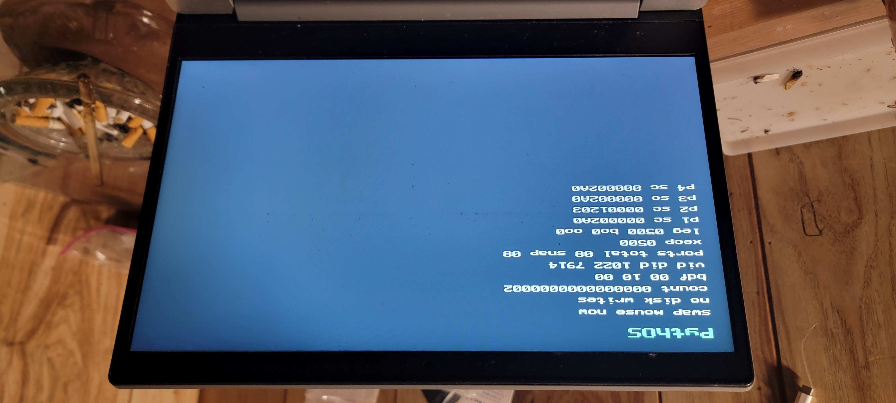
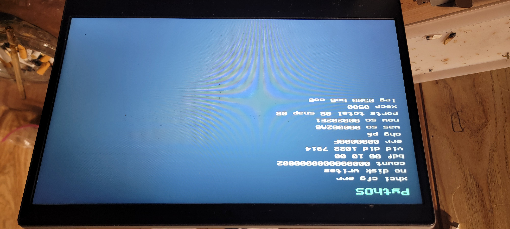
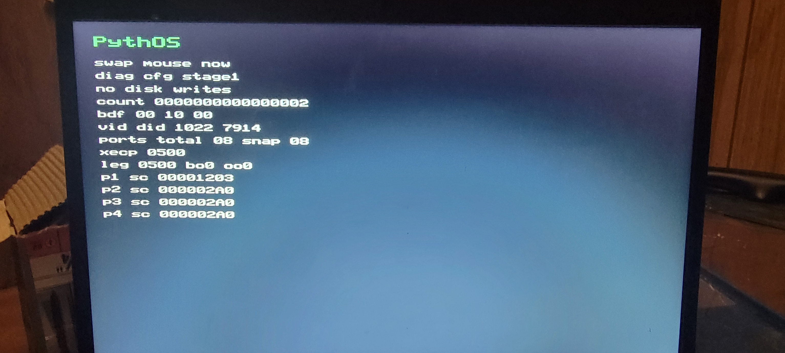
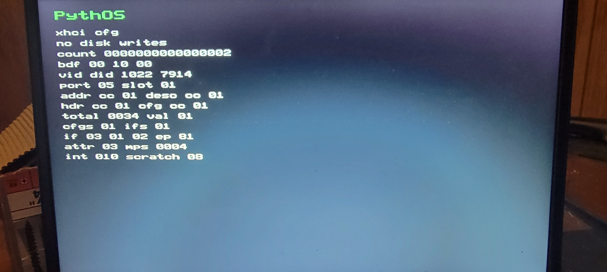
ADR 0084 defines the bounded Configuration Descriptor probe and its physical acceptance boundary.
2026-09-03 QEMU, deployment, and physical acceptance
The opt-in usb-xhci-endpoint-configuration-probe image
converts the physically discovered boot-mouse endpoint metadata into
a Running xHCI Endpoint Context, then sends USB
SET_CONFIGURATION(1). It deliberately stops before an
interrupt transfer is submitted.
Physical target Lenovo 81VS, AMD xHCI 1022:7914 at BDF 00:10.0, port 05, slot 01
Endpoint context interrupt-IN endpoint 0x81, DCI 03, interval encoding 06, max packet 4
Completion result Configure Endpoint CC 01, SET_CONFIGURATION CC 01, configured Slot state 03, configured Endpoint state 01
Prerequisites Address Device, Device Descriptor, configuration header, and full configuration completion codes all 01; scratchpad count 08
Power observation the external mouse illuminated; this establishes USB port power only
Storage and input boundary no disk writes and no interrupt poll
This is target-specific physical endpoint/device-configuration
acceptance for the Lenovo 81VS and Dell/PixArt mouse.
It does not prove an interrupt transfer, HID report parsing, cursor
movement, shell input, IRQ delivery, trackpad input, or generic USB
support.
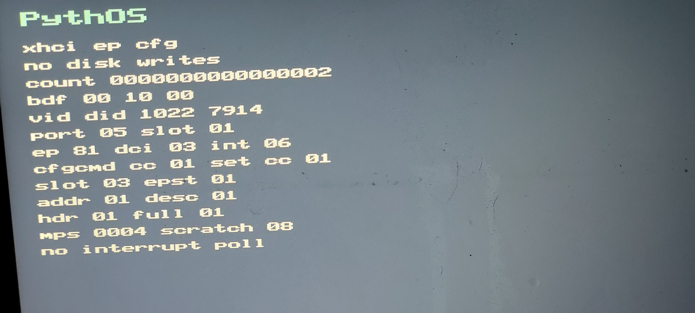
ADR 0085 defines the bounded Endpoint Configuration probe and its physical acceptance boundary.
Physical evidence gallery
The 2026-08-08 physical evidence-terminal capture reports
count 00000139 across five terminal pages. The formatter
displays count as hexadecimal, so 0x139 is 313 decimal
markers, not 139. Every page reports zero dropped markers and CRC
176F4C6E. The evidence-terminal implementation, feature
flag, and QEMU acceptance harness are present on main.
Two separate physical boots produced the same count, zero-drop state,
and CRC. Reconstructing the hardware stream from the current QEMU
stream plus the observed audio, hardware-discovery, and persistent
storage-path differences produces exactly 313 markers and recomputes
to CRC 176F4C6E.
The physical and QEMU transcripts are not required to be textually identical: truthful hardware discovery and existing persistent-storage state can select different accepted marker branches. CRC-32 repeatability is strong reproducibility evidence, not collision-proof proof of byte-for-byte identity. These markers also do not claim production completeness or broad hardware support.
Read the physical validation record, hardware-path differences, and artifact hashes.
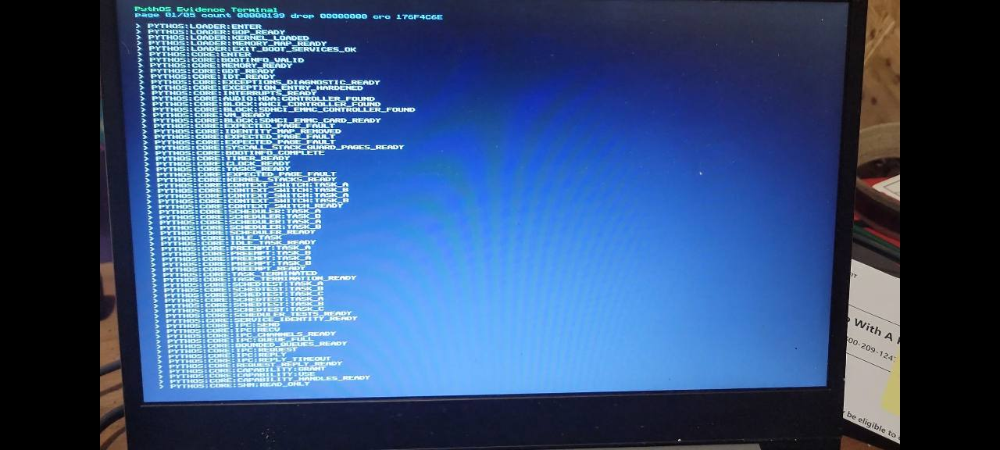
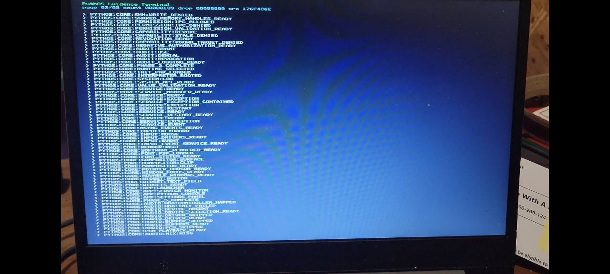
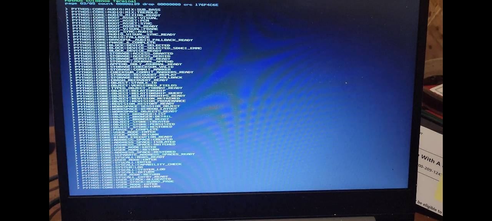
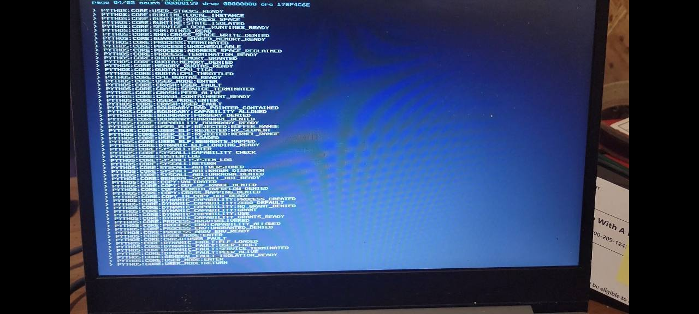
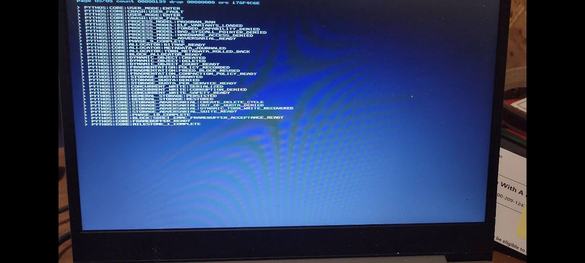
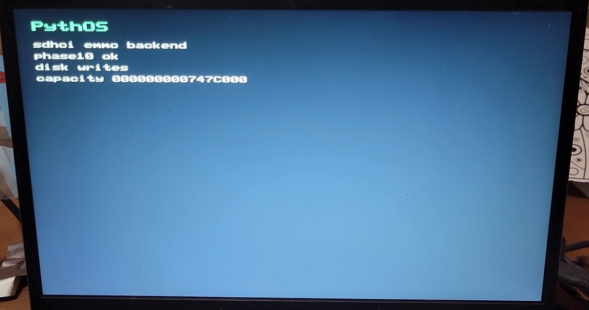

Raw video is retained outside git and identified above by exact byte size, duration, and SHA-256. The acceptance frame is stored in-repo for Pages.
Five original physical page photos are hashed in the validation record and are intended for the Milestone 1 release asset set.
Raw SHA-256: 01AA80BC02F1225D5B9E543A24B4EB96A8584BE15646EE258970C13BABE85979
sdhci emmc backend, phase10 ok, disk writes, capacity 000000000747C000.